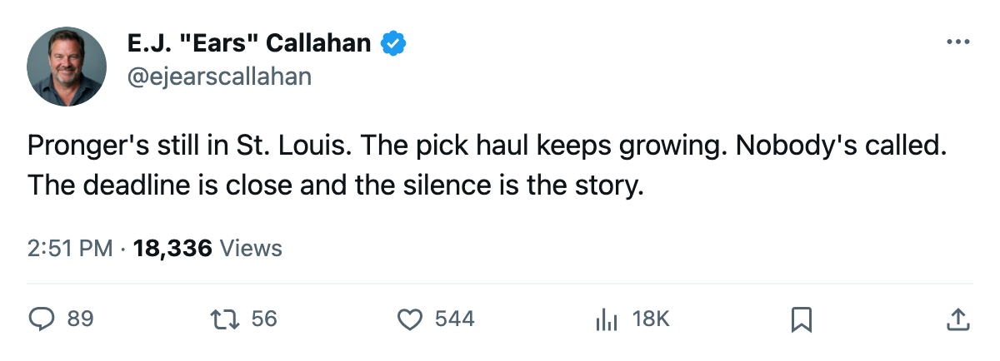
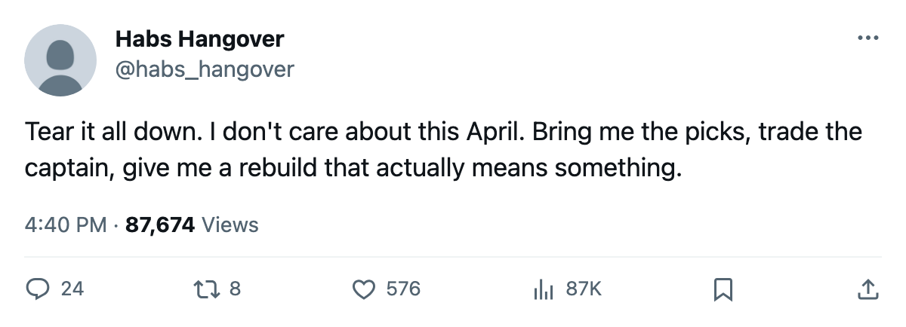

STL
STLPick Stockpilers: STL Holds 8 Already. The League Just Filed 2 More.
The Blues are 63 points in the Central with the largest draft war chest in the league. Their captain still hasn't moved. The deadline is 14 days away.
 E.J. "Ears" CallahanInsider · The Hot Stove
E.J. "Ears" CallahanInsider · The Hot Stove

STL picks from LA and CGY believed done; Pronger still in St. Louis with 14 days left

STL holds 8 draft picks, the most of any club in the league. The trade detector just filed 2 more heading to St. Louis from  Los Angeles Kings and
Los Angeles Kings and  Calgary Flames, both at diff confidence. League sources say those deals are done. The Blues sit 63 points in the Central.
Calgary Flames, both at diff confidence. League sources say those deals are done. The Blues sit 63 points in the Central.  Nashville Predators leads that division at 84.
Nashville Predators leads that division at 84.
The confirmed part: on March 1, the league filed a 1-player trade between  Toronto Maple Leafs and STL at news confidence. Barret Jackman went to Toronto. That is on the record.
Toronto Maple Leafs and STL at news confidence. Barret Jackman went to Toronto. That is on the record.
STL already held 2 first-round picks, their own and 1 from LA, plus a 2nd from CGY and a 4th from  Vancouver Canucks. If the two new acquisitions hold, STL carries 10 picks into the draft in 95 days.
Vancouver Canucks. If the two new acquisitions hold, STL carries 10 picks into the draft in 95 days.
Pronger sits. STL waits.
 Chris Pronger86 carries $9.50M, the largest salary in the contract-year class. He has played 64 games, scored 35 points, posted an 82 overall. His morale reads 98. He is not agitating. STL is not letting him walk in July for nothing.
Chris Pronger86 carries $9.50M, the largest salary in the contract-year class. He has played 64 games, scored 35 points, posted an 82 overall. His morale reads 98. He is not agitating. STL is not letting him walk in July for nothing.
The Blues' payroll is $55.71M against revenue of $62.56M and a profit of $10.87M. There is room to eat salary to land the right prospect package. STL already holds 8 picks, and 2 of them are first-rounders. A club that stacks that many picks is building toward a haul.
This desk rated Pronger at 2 flames on February 21, when the deadline was 26 days out. His grade sat at 82 then and reads 82 now. The window is 14 days, what the calendar has as the trade deadline, 2005-03-19.
 Washington Capitals sits second at 7 picks. If the LA and CGY trades hold, STL carries 10 and the next club is 3 behind. The rebuild is already under way in St. Louis, one pick at a time. Nobody has picked up the phone on the only name big enough to change the timeline.
Washington Capitals sits second at 7 picks. If the LA and CGY trades hold, STL carries 10 and the next club is 3 behind. The rebuild is already under way in St. Louis, one pick at a time. Nobody has picked up the phone on the only name big enough to change the timeline.
CONFIRMED: The TOR-STL trade filed March 1. News confidence, on the record.
DENIED: Nothing on this desk's board has been officially denied. Both the LA and CGY pick trades sit at diff confidence, which means the desk prints them as believed done and leaves them open until the league files the paperwork.

